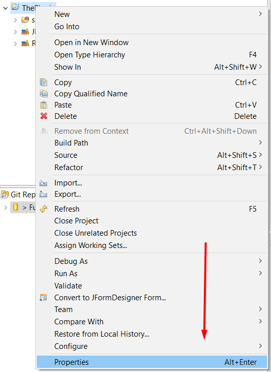
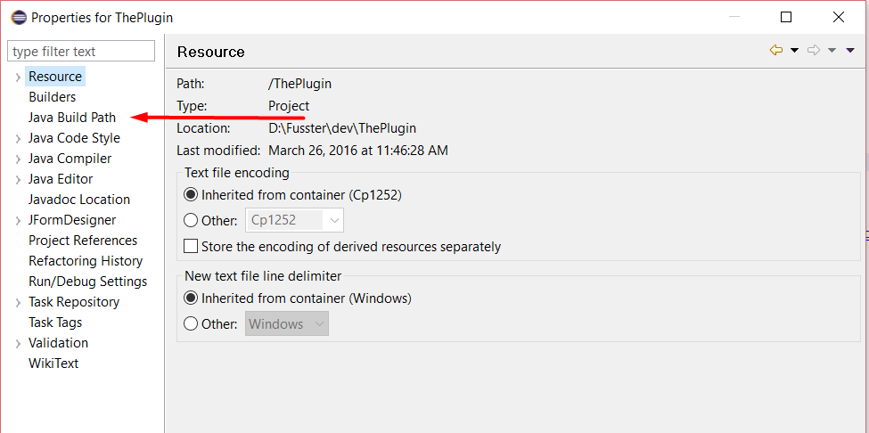
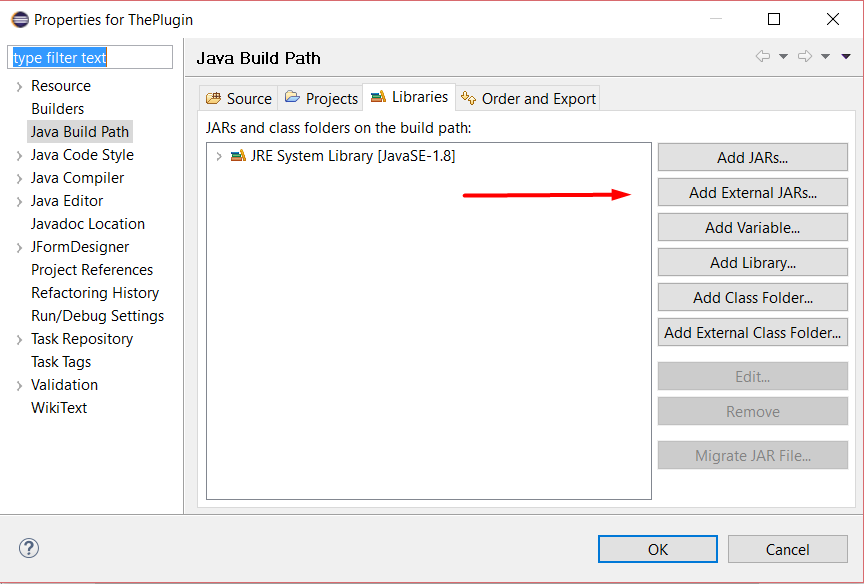
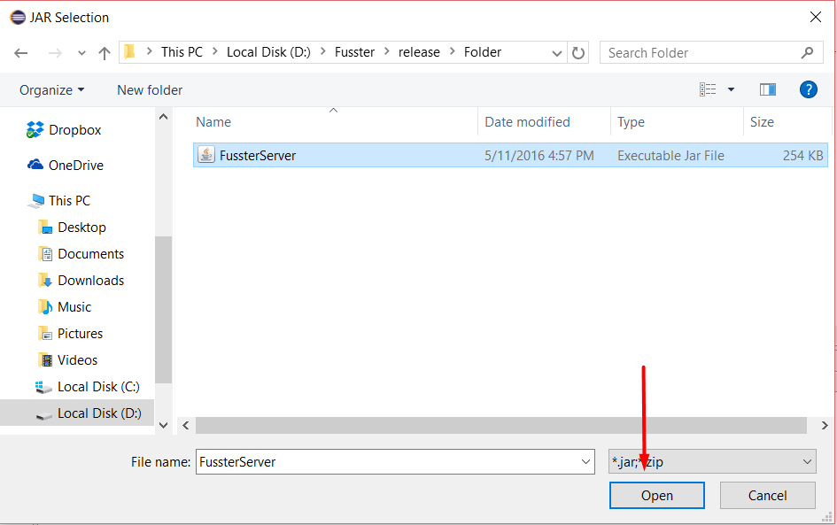
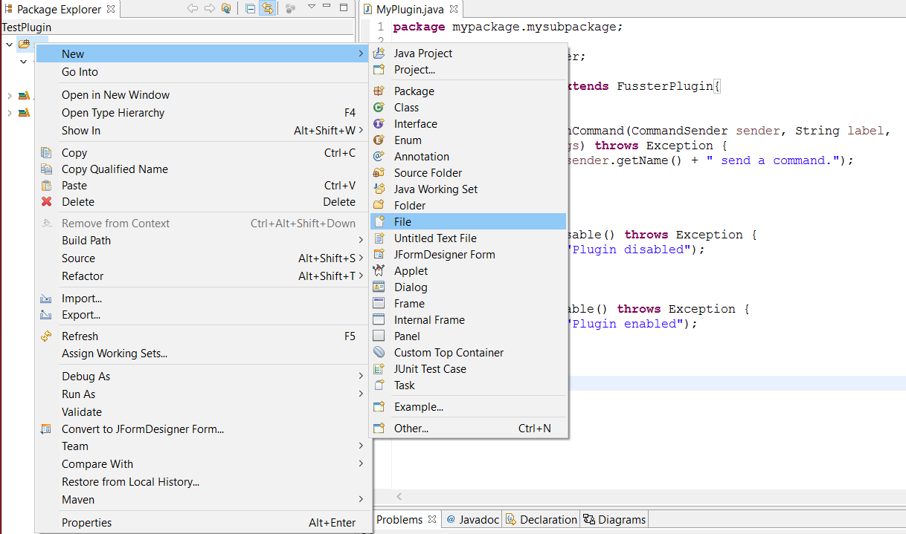
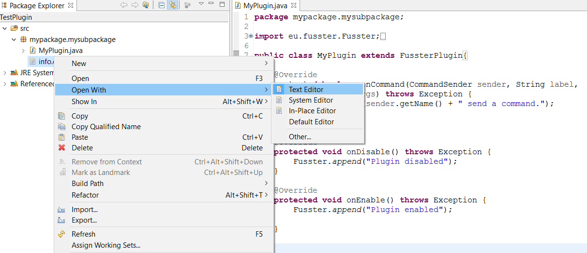
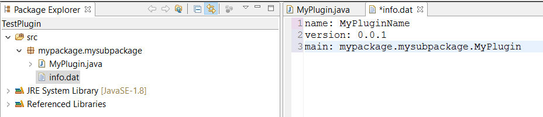

Creating a plugin
Make a project that includes in its build path FussterServer.jar
   
Create a class that extens FussterPlugin(or ServerPlugin, basicly any class extending FussterPlugin)
Create a file named 'info.dat'.
 
The file must start with the following text.
name:
version:
main:
Example:

name:MyPlugin
version:0.0.1
main:mypackage.mysubpackage.MyPlugin
Export as a jar
All posible beginnings with examples:
name*
MyPlugin
version*
0.0.1
main*
mypackage.mysubpackage.Myclass
author
ComBoro